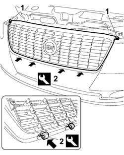

7055A43 CENTRE FRONT GRILLE - R.R.
- Path
- Procedures > 70 FITTINGS > 7055 MOULDINGS AND PROTECTION > 7055A EXTERIOR MOULDINGS > 7055A43 CENTRE FRONT GRILLE - R.R.
- Kind
- repair procedure (removal / refitting; the operation number is the code)
- Applies to
- all engines; all production periods
- Interactive page
- https://sloeber94.github.io/elrnDB-fCrm/en/#/194001173
Applies to: all engines; all production periods
 Removing
Removing
 Refitting
Refitting- Open the bonnet.
Op. 7040D30 ENGINE BAY FRONT BEAM COVER - R R
1. Undo the two bolts fixing the grille to the bodyshell.
2. Using the special tool, working at the points shown, release the retaining clips from the bumper.
Remove the grille from the vehicle releasing it from the bonnet release lever.
Tool | Description | Function | Validity |
|---|---|---|---|
1878077000 | Knife | Retainer removal |

Applies to: all engines; all production periods
Refitting
Removing- Check that the grille and the retaining springs are not damaged.
- Position the grille, attach the bonnet release lever and fit the retaining clips to the bumper.
- Tighten the upper two bolts fixing the grille to the bodyshell.
Op. 7040D30 ENGINE BAY FRONT BEAM COVER - R R
- Close the bonnet.
Topics linked from this page (1)
Topics that link to this page (27)
- 1004B10 POWER UNIT WITH MANUAL GEARBOX - R.R
- 1004B14 POWER UNIT WITH AUTOMATIC TRANSMISSION R + R
- 1020A20 CRANKCASE OIL SUMP - R.R CLEAN SURFACES FOR SEALANT APPLICATION
- 1020D26 FLYWHEEL SIDE OIL SEAL COVER - R.R AND REPLACE GASKETS
- 1020D38 FLYWHEEL SIDE OIL SEAL - REPLACE
- 1024B10 ENGINE FLYWHEEL - R + R FOR VERSIONS WITH MANUAL GEARBOX
- 1084A40 ENGINE OIL LEVEL SENSOR - R + R
- 1084B26 ENGINE OIL INTAKE DUCT - R.R
- 1084C34 ENGINE OIL COOLING RADIATOR - R + R
- 1084C36 ENGINE OIL COOLING RADIATOR SUPPORT BRACKET - R + R
- 1084C40 AIR DUCT FOR ENGINE OIL COOLING RADIATOR - R.R.
- 1088B20 ENGINE COOLING RADIATOR - R + R
- 1088B26 AIR DUCT ON RADIANT MASS - R.R.
- 1088E11 FANS WITH SINGLE ENGINE DUCT - R+R
- 1810A20 CLUTCH - R + R
- 1820B30 CLUTCH HYDRAULIC ACTUATOR - R.R.
- 2110A10 MANUAL GEARBOX AND DIFFERENTIAL - R + R
- 4410D10 FRONT SUSPENSION FRAME - R+R
- 5040A40 AIR CONDITIONING CONDENSER - R+R
- 5040A44 AIR CONDITIONING DRIER FILTER/ACCUMULATOR - R+R
- 5040A74 TANDEM PIPE FOR DELIVERY AND RETURN TO AIR CONDITIONING COMPRESSOR - R.R.
- 5540B42 CONTROL UNIT OF ONE GAS DISCHARGE LIGHT CLUSTER R R
- 5540B70 LEFT FRONT LIGHT CLUSTER WITH DIRECTION INDICATOR - R.R.
- 5540B71 RIGHT FRONT LIGHT CLUSTER WITH DIRECTION INDICATOR - R.R.
- 7055A84 FRONT BADGE ON BONNET LID OR RADIATOR BADGE - R.R.
- 7205E10 STRIPPING FRONT BUMPER
- 7210E10 R.R. FRONT BUMPER